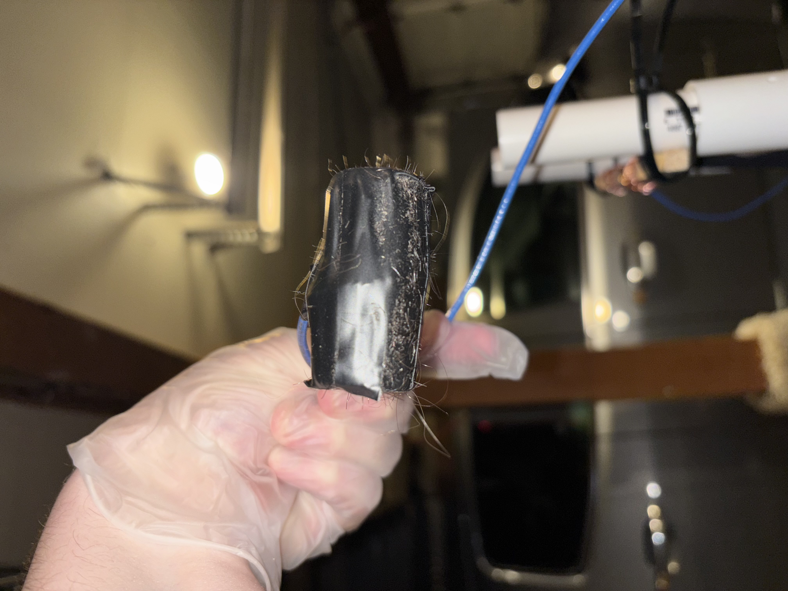

Projects
About Me ProjectsIn design 1 my team and I decided to try and make an electric link roller, many things went wrong with that class and the project, but as an effort to to salvage the project I got to build my own Van Der Graff Generator!

The principle behind it is based on triboelectricity. As the wooden dowel turns (Powered by the drill motor) it turns the nylon strip, which rubs againsed the pvc. as the nylon rubs againsed the pvc it will rub off electrons, when they are captured by the blue wire and transferred to the charge reservoir making it overall negatively charged. The other wire and reservoir then donates electrons to the now positively charged nylon.
The coolest part I think was that it actually worked to pick up hairs.
